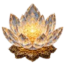
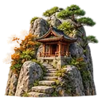
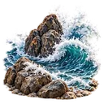
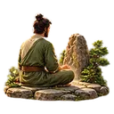
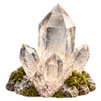
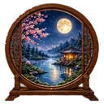
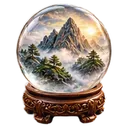
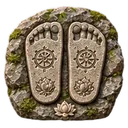
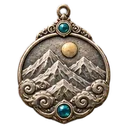

Spiritual growth: what MeditaDream changes
Through meditation, spiritual awakening grows step by step. It rarely comes in one leap, but rather from curiosity, practice and a few questions that won’t let go. MeditaDream gives you a map: Recognizing the Seven Chakras and Aligning the Seven Chakras guide you through the chakras, and the Third Eye sessions, such as The Inner Eye Awakens and The Door of Ajna, turn your attention inward.
Seeking spiritual guidance? Whether you picture a spirit guide, your higher self or simply your inner wisdom, The Guide of Light and The Council of Guides give it a face. Visit sacred places, from Beneath the Bodhi Tree to At the Center of Stonehenge, or learn from figures of wisdom in Sudhana’s Journey — The Teachers Along the Path.
Your inner journeys leave traces, so keep them. Describe your guides and their messages in the guides notebook, save the objects you bring back, and build your own sanctuaries. The zen passport marks each step of your path, with nothing to buy.
Your program
A Free Meditation Course for Spiritual Growth and Awakening
This free meditation course is for curious minds drawn to spiritual awakening who want a clear path to follow. Over six weeks, you move from the chakras to your spirit guides and the third eye, one thread at a time. Plan 15 to 30 minutes, four days a week. You don’t need to believe in anything, just to be curious.
- 6 weeks
- 15 to 30 min, 4 days a week
- 5 stages
- 11 sessions
Week 1
Find a quiet mind you can return to
Spiritual growth begins with a quiet mind you can find again. Beneath the Bodhi Tree has you sit at the roots of the tree linked with the Buddha’s awakening, letting attention open like its leaves. Then The Name and the Sign gives you a simple way back to that inner state. Note any image in your Spiritual Experiences journal.
Your habitChoose one spot at home and four fixed days, and sit there for each session with your phone on silent.
Sign of progressYou’re ready when you can sit for 15 minutes in calm attention and look forward to your quiet spot.
Week 2
Map your seven chakras
Now the body becomes your spiritual map. Recognizing the Seven Chakras helps you find each center in your body, from the root chakra at the base of the spine to the crown, before any color or meaning. Chakra Reset then travels through all seven slowly, with long, restful pauses. You don’t need to feel anything special: just notice.
Your habitOn your practice days, sit upright on a cushion or chair, and afterward write which chakra felt most alive.
Sign of progressYou’re ready when the seven chakras feel familiar and you can move through them in your mind on your own.
Week 3
Meet your spirit guides
Spirit guides, a higher self, inner wisdom: call it what feels right to you. The Guide of Light lets you receive a guide’s warmth and keep it once the guide steps away. The Council of Guides brings one question to a circle of five, then invites you to take the sixth seat yourself. Describe each guide in your guides notebook.
Your habitRight after each session, before you open your eyes fully, recall your guide’s face and message, then write them down.
Sign of progressYou’re ready when a guide, an image or a word comes back from one session to the next.
Week 4
Ask the big questions
With a guide at your side, bigger questions can come. The Keeper of the Archives explores the imagery of the akashic records and helps you tell what your mind invents from what seems to arise on its own. Maitreya’s Garden — Meeting the Person You Are Becoming leads you up a stairway, pavilion after pavilion. Begin and end both journeys in a personal sanctuary you create.
- The Keeper of the Archives24 min · intermediate
 Maitreya’s Garden — Meeting the Person You Are Becoming20 min · intermediate
Maitreya’s Garden — Meeting the Person You Are Becoming20 min · intermediate
- Personal sanctuaries
Your habitBefore each session, write one question that matters to you; afterward, write the first answer that comes, without judging it.
Sign of progressYou’re ready when your questions feel clearer, even if the answers are still taking shape.
Weeks 5 and 6
Turn your attention inward to the third eye
The last stage is the most subtle. These are advanced sessions, so take your time. The Third Eye and the Two Physical Eyes moves you from looking outward to looking inward, through the point between the brows. The Door of Ajna lets you cross the threshold of the third eye, step by step, and Non-dual Awareness asks where inside ends and outside begins. Images may come or not: both are fine.
- The Third Eye and the Two Physical Eyes26 min · advanced
- The Door of Ajna23 min · advanced
- Non-dual Awareness28 min · advanced
 Zen passport and progress
Zen passport and progress
Your habitPractice only when rested, sitting or lying down, and leave a few quiet minutes after each session before getting up.
Sign of progressYour zen passport shows each stage you’ve crossed, and reading back through your journal shows how your path has unfolded.
Follow the thread that spoke to you most, whether chakras, guides or the third eye, then explore The Celestial Library or The Forgotten Ruins.
Spiritual growth: the sessions in the app
 Body, Calm & Sleep6 sessions for this goal · See the category →
Body, Calm & Sleep6 sessions for this goal · See the category →- Recognizing the Seven Chakras27 min · intermediateIntroduces the traditional map of the seven centers.
- Aligning the Seven Chakras30 min · intermediateExplores the symbolic alignment of the centers.
- Chakra Reset18 min · intermediateTravels through the chakras in a slow meditation.

Activating the Energy Body27 min · intermediateExplores the sensations linked to the energy body.- The Luminous Breath13 min · intermediateCombines breath with images of light.
- Sacred Geometry26 min · intermediateUses imagined shapes as an anchor for attention.

- Gratitude to Your Guides23 min · intermediateAcknowledges the influence of important people or figures.
 The Council of Guides26 min · intermediateExplores several symbolic perspectives.
The Council of Guides26 min · intermediateExplores several symbolic perspectives.- The Guide of Light24 min · intermediateBrings a guiding figure to life within you.
- The Name and the Sign16 min · intermediateCreates your own symbolic landmarks.
- The Ten Steps to the Temple of Light21 min · intermediateOffers an imaginary descent toward a sacred space.

 Sacred Places7 sessions for this goal · See the category →
Sacred Places7 sessions for this goal · See the category →- Beneath the Bodhi Tree17 min · intermediateEvokes the place linked to the Buddha’s awakening.
- The Ancient Pagoda Among the Lotuses15 min · intermediateInvites you to contemplate a landscape from Asian tradition.

The Taoist Sanctuary in the Mountains15 min · intermediateA contemplative immersion inspired by Taoism.
The Scottish Cliff Above the Ocean13 min · intermediateContemplates the wind, the ocean and a sense of steadiness.
At the Center of Stonehenge13 min · intermediateExplores an ancient ritual atmosphere.
The Blue Ice Cave14 min · intermediateMeditates on silence and light.- The Northern Lights and the Circle of Crystals15 min · intermediateA sense of wonder before imagined lights.
- The Third Eye and the Two Physical Eyes26 min · advancedShifts your attention from the outside in.

The Inner Eye Awakens22 min · advancedDevelops your ability to form mental images.
The Image that Appears on its Own23 min · advancedObserves images that arise on their own.- The Door of Ajna23 min · advancedExplores the symbolism of the third eye.
- The Mandala that Builds Itself26 min · advancedContemplates shapes appearing on their own.
 Buddhist Meditations4 sessions for this goal · See the category →
Buddhist Meditations4 sessions for this goal · See the category →
Sudhana’s Journey — The Teachers Along the Path30 min · intermediateEvokes learning from figures of wisdom.- The Eleven Faces of Avalokiteśvara22 min · intermediateExplores compassion and discernment.
- Maitreya’s Garden — Meeting the Person You Are Becoming20 min · intermediateReflects on your inner growth.
- Samantabhadra and the White Elephant — The Ten Great Vows20 min · intermediateExplores ethical commitments.
 Shamanic Trance4 sessions for this goal · See the category →
Shamanic Trance4 sessions for this goal · See the category →- The Vision Quest30 min · intermediateAn imaginary journey inspired by shamanic traditions.
- The Fire of the Ancients26 min · intermediateExplores the symbolic presence of ancestors.
- The Circle of Protection23 min · intermediateBuilds a reassuring symbolic space.

Returning with a Power Object30 min · intermediateBrings back a personal quality embodied in an imaginary object.
Spiritual growth: the features that help
- Guides notebook
Describe the guide figures you meet, their messages and when they reappear.
Learn more → - Collection of symbolic objects
Keep the objects you imagine or find on your inner journeys, along with their meaning.
- Personal sanctuaries
Create inner places with their own setting, name and ambience, and choose a favorite sanctuary.
 Personal journals
Personal journalsRecord dreams, gratitude, emotions, signs and spiritual experiences in organized journals.
Learn more →- Immersive worlds
Choose from 17 story-rich settings that spark imagination and escape.
Learn more → - Zen passport and progress
Track badges, stamps, points and practice milestones, with nothing to buy.
 Meditation creator
Meditation creatorWrite a session made just for you; your phone can read it aloud, even offline.
Learn more →
Spiritual growth: the immersive worlds
 The Tree of Consciousness
The Tree of Consciousness The Cosmic Temple
The Cosmic Temple The Celestial Library
The Celestial Library The Mirror Dimension
The Mirror DimensionSpiritual growth: how to use the app in 4 steps
Wondering how to meditate spiritually? Start with the body as a map: Recognizing the Seven Chakras (27 minutes), then Aligning the Seven Chakras. Chakra Reset offers a slower, shorter way back whenever you need it.
Approach the third eye gently: The Third Eye and the Two Physical Eyes first, then The Inner Eye Awakens and The Image that Appears on its Own. These are advanced sessions, so take your time.
Meet your guides with The Ten Steps to the Temple of Light or The Guide of Light, then use your guides notebook to describe each guide, its message and when it returns.
Create a personal sanctuary, explore a world such as The Tree of Consciousness or The Cosmic Temple, and note signs and intuitions in your Spiritual Experiences journal.
Frequently asked questions
How do I use MeditaDream for spiritual growth?
Choose one thread and follow it for a few weeks: chakras, the third eye or spirit guides. Each thread has several sessions that build on one another. After each journey, write what you saw or felt in your journals or your guides notebook. Over time, those notes trace your spiritual development, and the zen passport marks the steps.
What is the third eye, and how do I start?
In yogic tradition, the third eye, or Ajna, is the sixth chakra, pictured between the eyebrows and linked to intuition and inner vision. MeditaDream approaches it as a way of turning attention inward and noticing inner images. Start with The Third Eye and the Two Physical Eyes, and don’t force anything: images may come, or they may not.
Do I need to believe in anything to use these meditations?
No. You can treat chakras, guides or your higher self as traditions, symbols or images for your imagination, and still enjoy the sessions as inner experiences. MeditaDream has no dogma and asks for no belief, only curiosity and a quiet moment. Take what speaks to you and leave the rest.
Read more
From the blog on this topic

Practice for free
Every session is in the MeditaDream app: free, no subscription, no ads, no account, and it works offline.